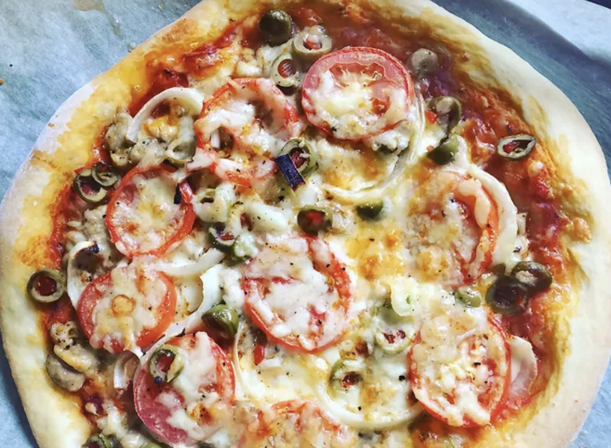

Pizza

Description
If you're looking for a homemade pizza crust recipe that's great for beginners, you're in luck. This top-rated recipe is super easy to throw together on a whim – and it puts the store-bought stuff to shame. Learn how to make the best pizza crust of your life with just a few ingredients, find out how to shape the dough, and get our best storage secrets.
Ingredients
- 1 cup warm water (110 degrees F/45 degrees C)
- ½1 (.25 ounce) package active dry yeast
- 1 teaspoon white sugar
Steps
- Gather all ingredients. Preheat oven to 450 degrees F (230 degrees C), and lightly grease a pizza pan.
- Place warm water in a bowl; add yeast and sugar. Mix and let stand until creamy, about 10 minutes.
- Add flour, oil, and salt to the yeast mixture; beat until smooth. You can do this by hand or use a stand mixer fitted with a dough hook to make it easier.
Home